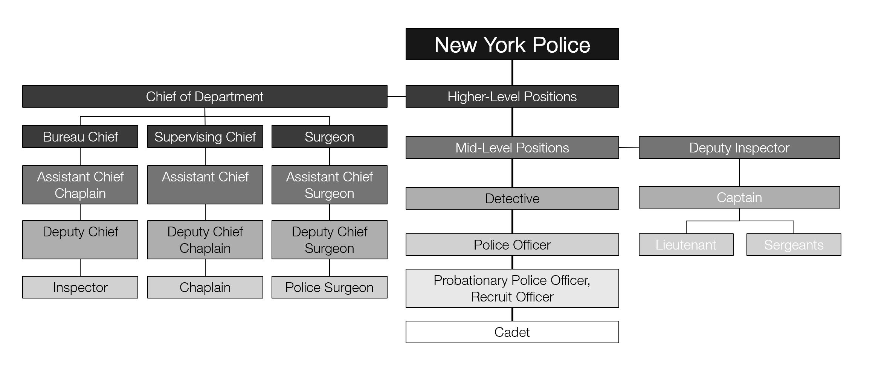
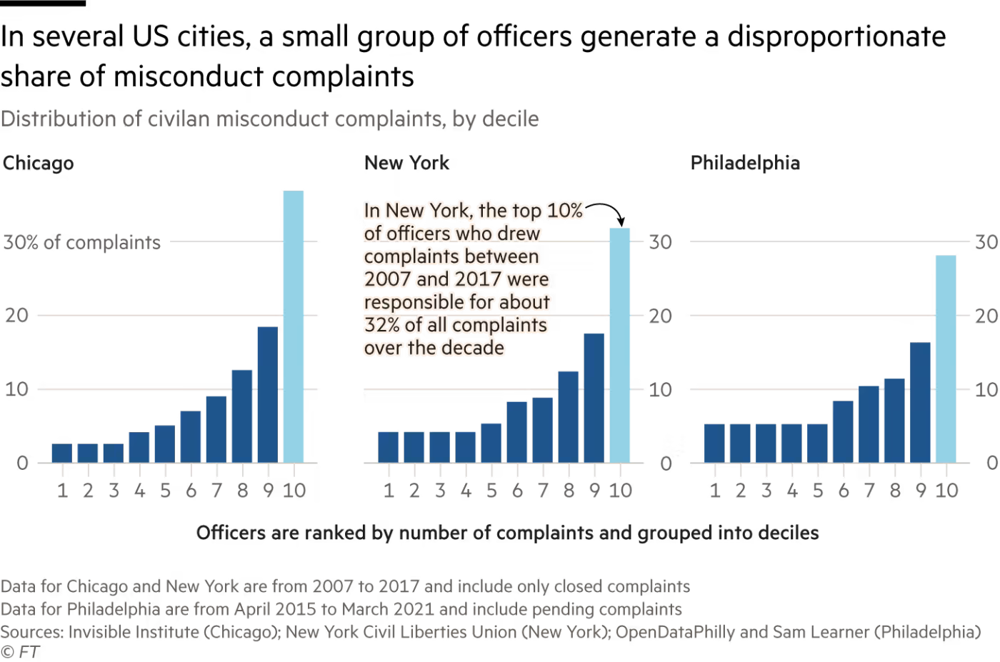
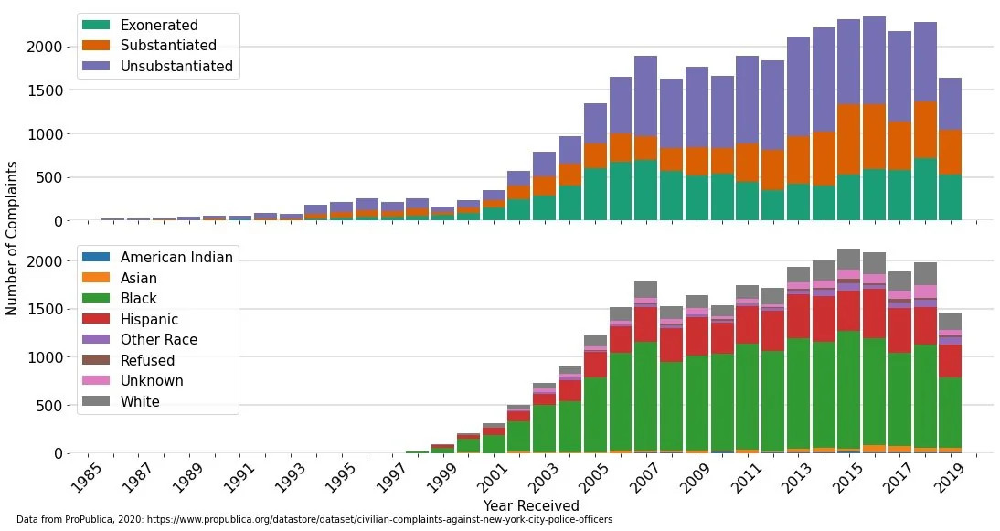
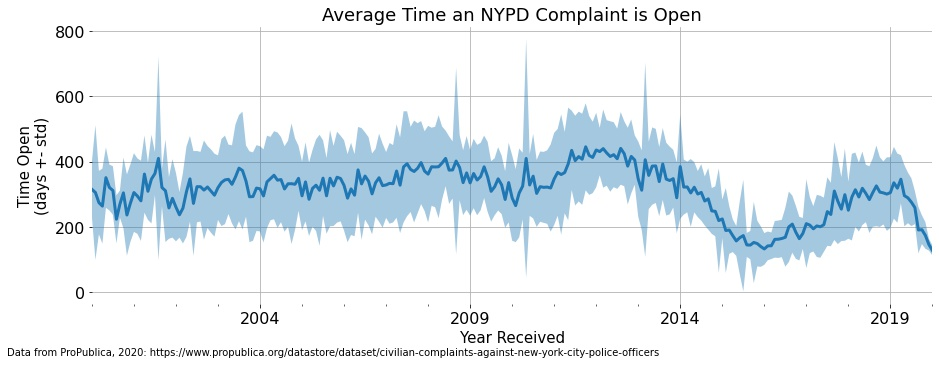
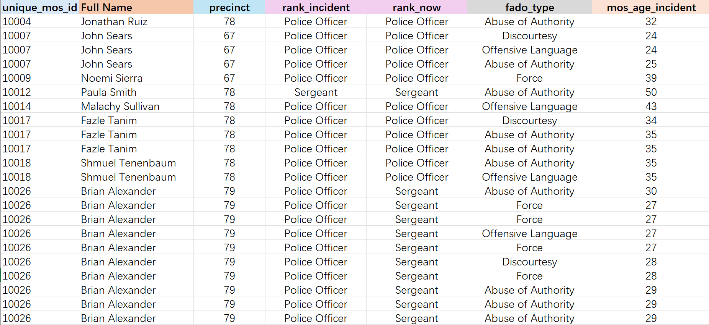
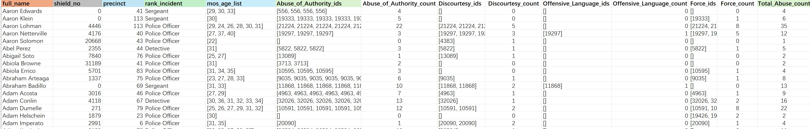
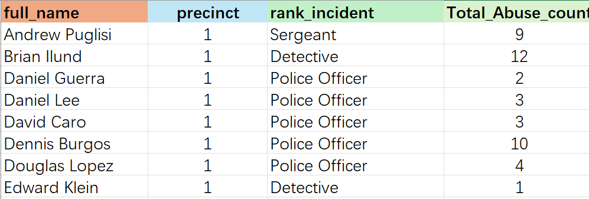

Assignment 4
Persuasive or Deceptive Visualization?
Jin Gao — gaojin@mit.edu
Proposition: Is Police Misconduct Collective or Individual?
The New York police system is a vast interpersonal network with
complex social relationships. In the process of law enforcement, the
role played by the police is not merely individual but reflects
collective decision-making.
Based on the given data, I am interested in exploring:
Is there a correlation between police interpersonal relationships and
social networks and their misconduct?
Do more experienced police officers have a higher common rate of
misconduct?
In neighboring jurisdictions, where police social connections are
stronger, is there a higher rate of collective misconduct?
Can we use Persuasive and Deceptive Visualization to express conflicting
viewpoints, namely:
New York police misconduct is collective, with some police misconduct
being contagious, meaning some areas' police have a higher rate of
misconduct, while other "cleaner" police groups are not inclined to
misconduct.
New York police misconduct is individual, their decisions and the
society they are in are unrelated.
Background Information
Intergrated to understand the data

The Hierarchy of the New York Police System.
This diagram provides a detailed view of the organizational structure
within the NYPD. It is critical for us to understand the hierarchy
between officers.
Linking geographical data to New York Police Precincts provides an
intuitive visualization that relates directly to urban spaces, offering
a new layer of insight into the spatial distribution of police
activities and complaints.
Here I collected some existing figure and my new figures showing the
general picture of the data

Case Study 1: Analysis of Complaints in Major US
Cities. This case study highlights that a small share of US police
officers are responsible for a third of complaints in large cities.
This detailed analysis reveals significant disparities in police conduct
across major urban areas, prompting discussions on accountability and
reform.
Reference:
Reddit
- DataIsBeautiful

Case Study 2: Average Time an NYPD Complaint Remains
Open. This visualization offers insights into the resolution timeline
for complaints filed against NYPD officers.
The study provides a critical examination of the procedural delays in
addressing complaints, highlighting areas for improvement in police
accountability mechanisms.
Reference:
Reddit
- DataIsBeautiful

Further examinations reveal consistent patterns in the average time an
NYPD complaint remains open, underscoring systemic issues in complaint
resolution processes.
Main Drawings
The Police Misconduct is a Collective Practice Influenced by Their
Social Network
Design Decisions and Rationale:
RATIONALE_1
RATIONALE_2
RATIONALE_3
Data Transformation:
[WRITE PARAGRAPHS HERE.]
AGAINST the Proposition
The Police Misconduct is an Individual Practice, NOT a Systematic
Problem
Design Decisions and Rationale:
RATIONALE_1
RATIONALE_2
RATIONALE_3
Data Transformation:

Step1: extract core data related to social network and police's information
1. Retain unique_mos_id for further data linkage (vlookup) usage
2. Transform each person's case into one line, with catagories
We found that the fedo_type has four catagories : Abuse of Authority, Discourtesy, Offensive Language, Force. We can pivot the data into one line as an attribute of the person.
import pandas as pd
# Load the uploaded CSV file
file_path = "process1.csv"
data = pd.read_csv(file_path)
fado_types = ["Abuse of Authority", "Discourtesy", "Offensive Language", "Force"]
# Calculate the most common precinct and rank_incident for each Full Name
data["precinct"] = data.groupby("full_name")["precinct"].transform(
lambda x: x.mode()[0]
)
data["rank_incident"] = data.groupby("full_name")["rank_incident"].transform(
lambda x: x.mode()[0]
)
data["shield_no"] = data.groupby("full_name")["shield_no"].transform(
lambda x: x.mode()[0]
)
# Now we'll pivot the data again with this simplification
simplified_data = pd.DataFrame()
for name, group in data.groupby("full_name"):
record = {
"full_name": name,
"shield_no": group["shield_no"].iloc[0], # Most common precinct
"precinct": group["precinct"].iloc[0], # Most common precinct
"rank_incident": group["rank_incident"].iloc[0], # Most common rank_incident
"mos_age_list": group["mos_age_incident"].unique().tolist(),
}
# For each fado type, compile IDs and counts
for fado_type in fado_types:
fado_group = group[group["fado_type"] == fado_type]
record[f"{fado_type}_ids"] = fado_group["unique_mos_id"].tolist()
record[f"{fado_type}_count"] = len(fado_group)
record_df = pd.DataFrame([record])
simplified_data = pd.concat([simplified_data, record_df], ignore_index=True)
# Rename columns to match the requested format more closely
simplified_data.columns = simplified_data.columns.str.replace(" ", "_").str.replace(
"of_Authority", "of_Authority"
)
# Save the simplified DataFrame to a new CSV file
output_file_path_simplified = "pivoted_data.csv"
simplified_data.to_csv(output_file_path_simplified, index=False)
output_file_path_simplified

Step1 Result: pivoted data

Step2: ranking and grouping accoring to its precient number and rank_indicent.
After removing zero data, we get a cleaner table with police officer's name, their beloning precient, their rank and their total abuse count.
Step3: Calculating the social network according to d3.js's input data structure
Now we have a cleaned data with the key information we want. We need to predict their social network using their rank and precinct
According to the background knowledge mentioned at the beginning, the rank of the police officers is:
NYPD Ranks, Roles, Descriptions, and Connections
Inspector
Senior management position in charge of borough commands or specialized divisions.
Connections:
Deputy Inspector - Weight: 5
Captain - Weight: 4
Deputy Inspector
Oversees larger units or precincts, handling a range of administrative and operational tasks.
Connections:
Inspector - Weight: 5
Captain - Weight: 4
Lieutenant - Weight: 3
Captain
In charge of precincts or specialized units, playing a key role in decision-making and police activities coordination.
Connections:
Deputy Inspector - Weight: 4
Lieutenant - Weight: 3
Sergeant - Weight: 2
Lieutenant
Manages specific units or sections of a precinct, supervising Sergeants and their subordinate officers and detectives.
Connections:
Captain - Weight: 3
Sergeant - Weight: 4
Detective - Weight: 2
Sergeant
The first line of supervisory authority, overseeing Police Officers and Detectives, ensuring adherence to policies.
Connections:
Lieutenant - Weight: 4
Detective - Weight: 3
Police Officer - Weight: 5
Detective
Specializes in investigation, promoted based on skills, works closely with Police Officers, and reports to Sergeants or Lieutenants.
Connections:
Sergeant - Weight: 3
Police Officer - Weight: 2
Police Officer
Entry-level position, performing duties as assigned by higher ranks, often forms the core of NYPD's street presence.